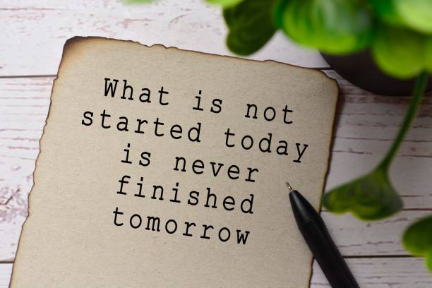

Whether you're having a rough day and need a pick-me-up to assure yourself
that it's all going to be OK, or whether you're just looking for a mission
statement for the day, these inspirational quotes will help you put one foot in
front of the other and make the small or sweeping changes that you desire. No matter if
it's a movie star, a thought leader, Beyoncé, or a 17th century writer, you're sure to find an
inspirational quote that speaks to your drive and determination. Here are the best
inspirational quotes for you!
100 Inspirational Quotes
- "When you have a dream, you've got to grab it and never let go."
— Carol Burnett
- "Nothing is impossible. The word itself says 'I'm possible!'
— Audrey Hepburn
- "There is nothing impossible to they who will try."
— Alexander the Great
- "The bad news is time flies. The good news is you're the pilot."
— Michael Altshuler
- "Life has got all those twists and turns. You've got to hold on tight and off you go."
— Nicole Kidman
- "Keep your face always toward the sunshine, and shadows will fall behind you."
— Walt Whitman
- "Be courageous. Challenge orthodoxy. Stand up for what you believe in.
When you are in your rocking chair talking to your grandchildren many
years from now, be sure you have a good story to tell."
— Amal Clooney
- "You make a choice: continue living your life feeling muddled in this abyss of
self-misunderstanding, or you find your identity independent of it. You draw your own box."
— Duchess Meghan
- "Success is not final, failure is not fatal: it is the courage to continue that counts."
- Winston Churchill
- "You define your own life. Don't let other people write your script."
— Oprah Winfrey

- "You are never too old to set another goal or to dream a new dream."
— Malala Yousafzai
- "At the end of the day, whether or not those people are comfortable with
how you're living your life doesn't matter. What matters is whether you're comfortable with it."
— Dr. Phil
- "Spread love everywhere you go."
— Mother Teresa
- "Do not allow people to dim your shine because they are blinded.
Tell them to put some sunglasses on."
— Lady Gaga
- "You don't always need a plan. Sometimes you just need to breathe, trust,
let go and see what happens.
— Mandy Hale
- "You can be everything. You can be the infinite amount of things that people are."
— Kesha
- "What lies behind you and what lies in front of you, pales in comparison to what lies inside of you."
— Ralph Waldo Emerson
- "I want to be in the arena. I want to be brave with my life. And when we make the choice to dare greatly,
we sign up to get our asses kicked. We can choose courage or we can choose comfort,
but we can't have both. Not at the same time."
— Brene Brown
- "Belief creates the actual fact."
— William James
- No matter what people tell you,
words and ideas can change the world."
— Robin Williams

- "I'm not going to continue knocking that old door that doesn't open for me.
I'm going to create my own door and walk through that."
— Ava DuVernay
- "It is during our darkest moments that we must focus to see the light."
— Aristotle
- "Not having the best situation, but seeing the best in your situation is the key to
happiness."
— Marie Forleo
- "Believe you can and you're halfway there."
- Theodore Roosevelt
- "Weaknesses are just strengths in the wrong
environment."
— Marianne Cantwell
- "Silence is the last thing the world will ever hear
from me."
— Marlee Matlin
- "In a gentle way, you can shake the world."
— Mahatma Gandhi
- "Learning how to be still, to really be still and
let life happen—that stillness becomes a radiance."
— Morgan Freeman
- "All you need is the plan, the road map, and
the courage to press on to your destination."
— Earl Nightingale
- "We must let go of the life we have planned,
so as to accept the one that is waiting for us."
— Joseph Campbell